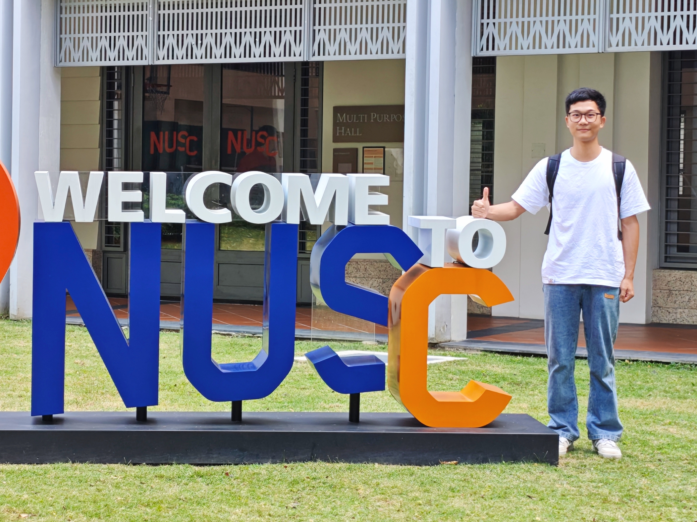
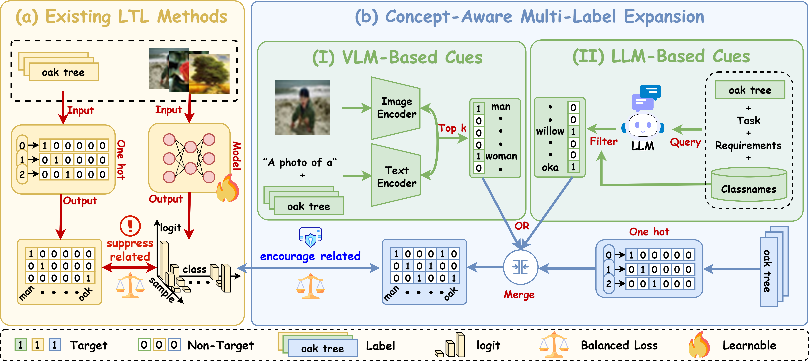
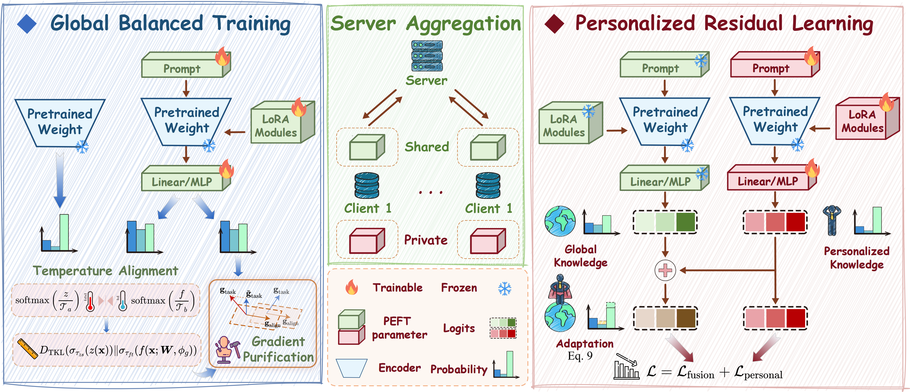
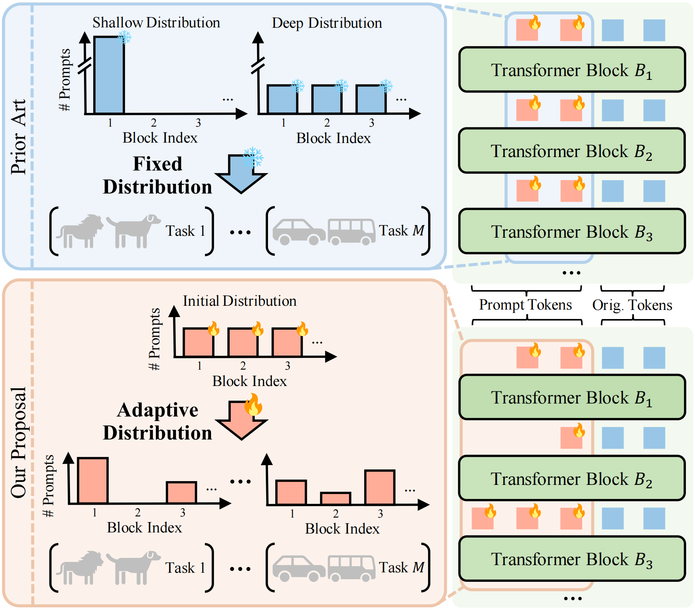
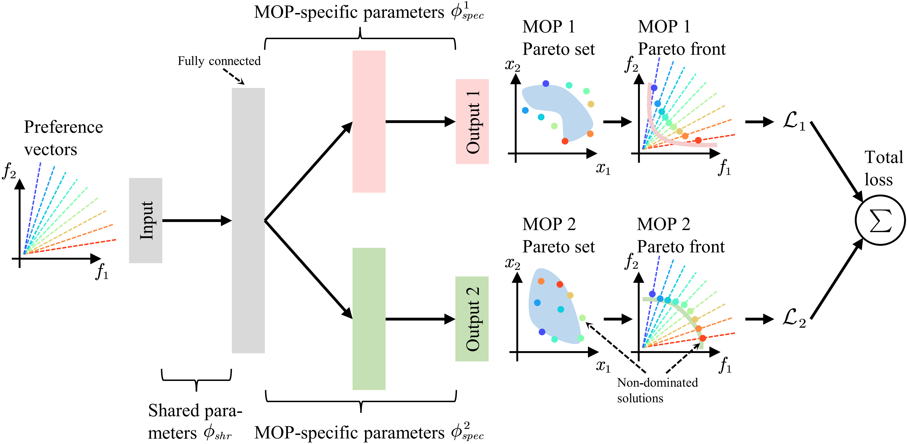

Chikai Shang (尚驰凯)
Masters Student |
 |
I am a first-year Masters student in the School of Informatics at Xiamen University, supervised by Prof. Yang Lu.
I am broadly interested in Parameter-Efficient Fine-Tuning, Long-Tailed Learning, and Federated Learning. My goal is to develop robust fine-tuning frameworks that enable foundation models to generalize in complex, real-world settings.
†: equal contribution ‡: corresponding author
|
 |
CUE: Concept-Aware Multi-Label Expansion to Mitigate Concept Confusion in Long-Tailed Learning CVPR 2026 [Code] |
|
 |
Fine-Tuning Impairs the Balancedness of Foundation Models in Long-Tailed Personalized Federated Learning CVPR 2026 [Code] |
|
 |
PRO-VPT: Distribution-Adaptive Visual Prompt Tuning via Prompt Relocation ICCV 2025 [Paper] [Code] |
|
 |
Collaborative Pareto Set Learning in Multiple Multi-Objective Optimization Problems IJCNN 2024 (Oral) [Paper] [Code] |